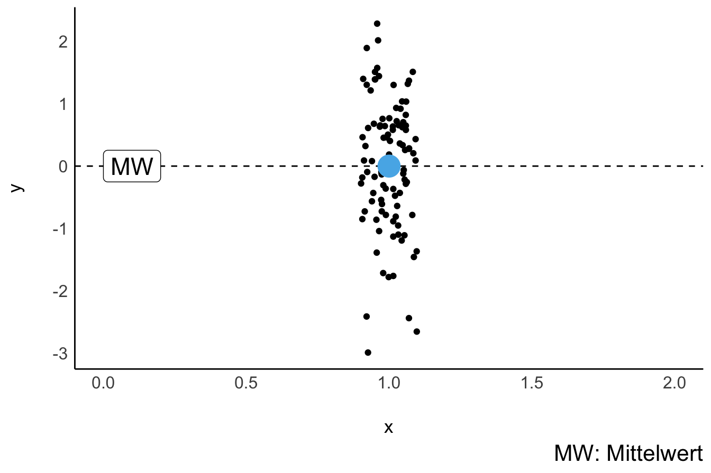
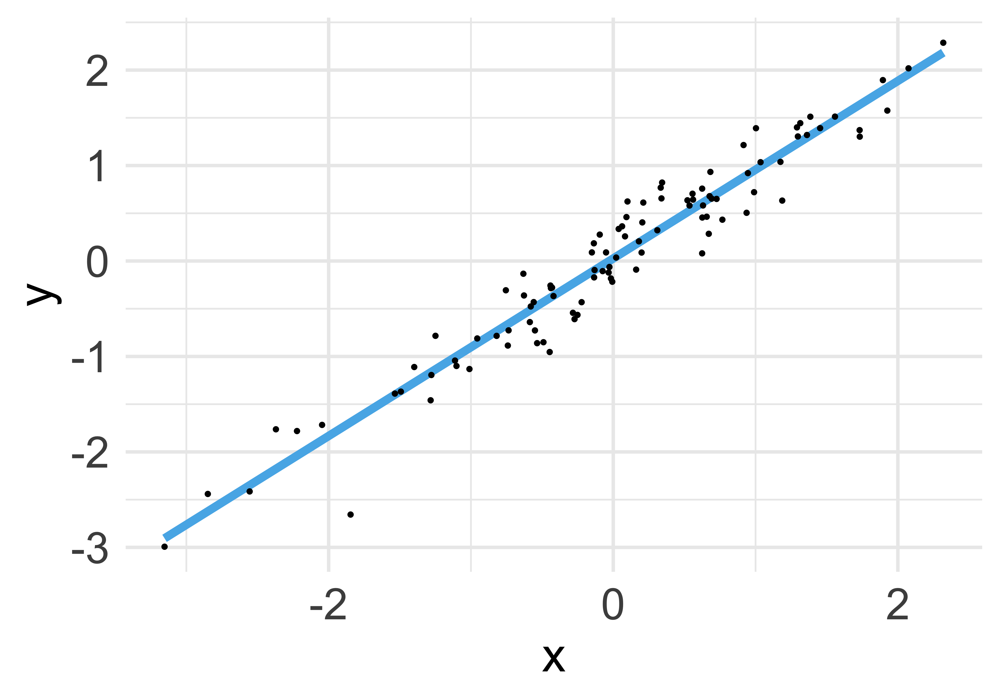
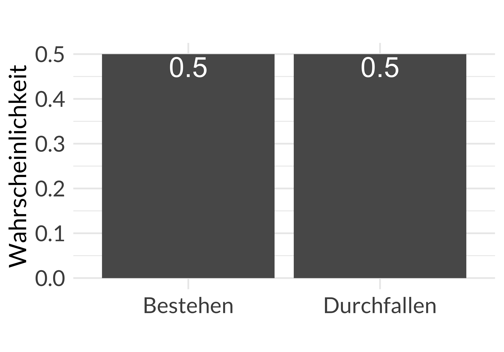
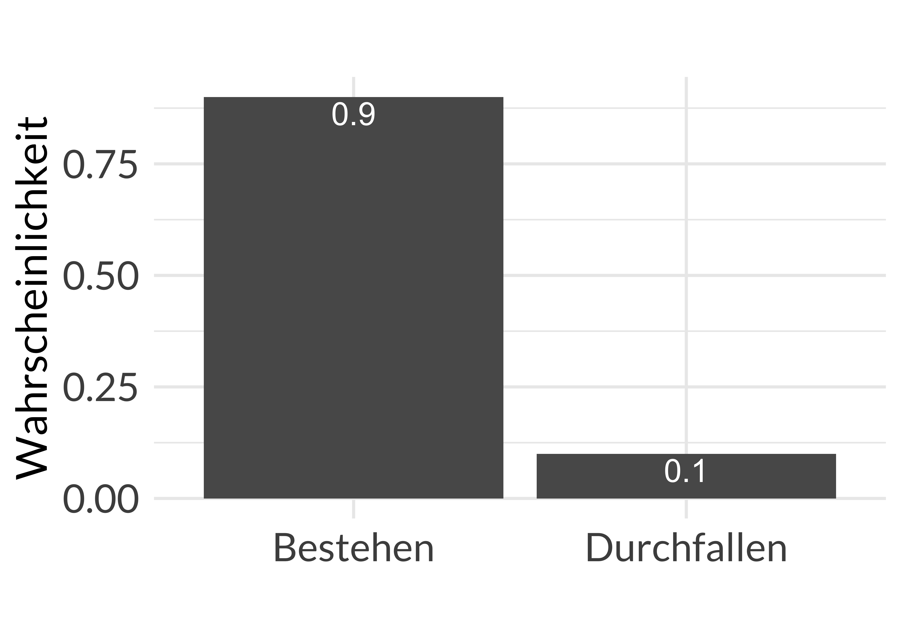
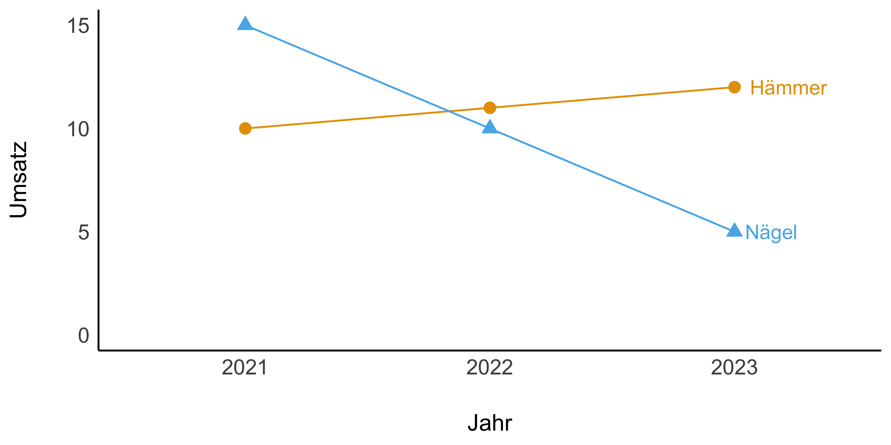

flowchart TD
subgraph Lehrkraft
F["🔥"]
end
subgraph A[Mitarbeit]
C["🪵"]
end
subgraph E[Eigenstudium]
D["🌳"]
end
2 Rahmen
Schlüsselwörter
Statistik, Prognose, Modellierung, R, Datenanalyse, Regression
\[ \definecolor{ycol}{RGB}{230,159,0} \definecolor{modelcol}{RGB}{86,180,233} \definecolor{errorcol}{RGB}{0,158,115} \definecolor{beta0col}{RGB}{213,94,0} \definecolor{beta1col}{RGB}{0,114,178} \definecolor{xcol}{RGB}{204,121,167} \]
2.1 Einstieg
Abbildung 1.3 zeigt den Standort dieses Kapitels im Lernpfad und gibt damit einen Überblick über das Thema dieses Kapitels im Kontext aller Kapitel. Abbildung 2.1 zeigt, dass unser Vorgehen in diesem Buch einem Fließband gleicht: Schritt für Schritt, in der richtigen Reihenfolge, vom Anfang bis Ende, erarbeiten wir unser “Datenprodukt”.

2.1.1 Lernziele
- Sie können eine Definition von Statistik wiedergeben.
- Sie können eine Definition von Daten wiedergeben.
- Sie können den Begriff Tidy-Daten erläutern.
- Sie können Beispiele für verschiedene Skalenniveaus nennen.
2.1.2 Einstieg
Übungsaufgabe 2.1 (Hallo, Statistik) Gehen Sie in Kleingruppen zusammen (3-4 Personen). Stellen Sie sich anhand der Schlagworte einander vor:
- (wissenschaftliche) Interessen
- Erwartung an diesen Kurs
- Vorkenntnisse in Statistik (und in R)
Wenn Sie wollen: Fügen Sie einen Fun Fact hinzu. \(\square\)
Übungsaufgabe 2.2 (Frag jetzt) Die Lehrkraft stellt Ihnen ein Forum zur Verfügung, auf dem Sie anonym Fragen an die Lehrkraft richten können (z.\(\,\)B. auf frag.jetzt).
Stellen Sie dort Ihre Fragen ein; voten Sie die Fragen Ihrer Kommilitonis auf oder ab. Die Lehrkraft beantwortet dann die Fragen mit den meisten Upvotes. \(\square\)
2.1.3 Erfolgsgrezept
Drei Faktoren beeinflussen Ihren Lernerfolg: 1) Ihre Lehrkraft, 2) Ihre Mitarbeit im Unterricht und 3) Ihr Eigenstudium zuhause (Vor- bzw. Nachbereitung des Unterrichts), s. Abbildung 2.2.
Eine gute Lehrkraft ist wie der Funke, der eine (Lern-)Flamme entzündet. Aber es braucht Brennmaterial, einen Holzscheit, das ist Ihre Konzentration im Unterricht. Ein Holzscheit allein reicht nicht aus; es braucht mehr Brennmaterial, um das Feuer am Leben zu erhalten: Ihr Eigenstudium, das stetige, selbständige Beschäftigen mit der Materie.
2.2 Was ist Statistik und wozu ist sie gut?
Die Aufgabe von Statistik ist es, Modelle zu bilden durch Zusammenfassen von Daten. Modelle machen es uns einfacher, schwierige Sachverhalte zu verstehen. Zentral ist dabei die Analyse von Variabilität der Daten. Daten kommen in verschiedenen Varianten vor, typischerweise in Tabellenform, möglichst im sog. Tidy-Format.
In diesem Buch werden die Begriffe Statistik, Datenanalyse und Data Science synonym verwendet.
Übungsaufgabe 2.3 (Nutzen von Statistik) Fragen Sie einen Chatbot (wie ChatGPT), was der Nutzen von Statistik ist. Diskutieren Sie die Antwort. \(\square\)
Das versteht ChatGPT unter Statistik:
🧑🎓 Was ist Statistik? Bitte definiere verständlich.
🤖 Statistik ist eine Wissenschaft, die sich mit der Sammlung, Analyse, Interpretation, Präsentation und Übertragung von Daten beschäftigt. Ziel ist es, Muster und Trends in den Daten zu erkennen und verlässliche Schlussfolgerungen über eine größere Gruppe (z.\(\,\)B. Bevölkerung) auf der Basis einer Stichprobe (Teilmenge) zu treffen. Die Statistik hilft uns bei der Beantwortung von Fragen, indem sie uns dabei hilft, die Unsicherheit in den Daten zu messen und zu verstehen1.
Gar nicht schlecht! Es gibt mehrere Definition von Statistik. Definition 2.1 zeigt eine.
Definition 2.1 (Statistik) Statistik fasst Werte zusammen, quantifiziert deren Unterschiedlichkeit und beschreibt die Ungewissheit unserer Schlüsse (Kaplan, 2009; Poldrack, 2023) . \(\square\)
Betrachten wir die drei Bestimmungsstücke einer Definition von Statistik genauer: 1. Daten zusammenfassen, 2. Unterschiedlichkeit quantifizieren und 3. Ungewissheit beschreiben.
2.2.1 Daten zusammenfassen
Abbildung 2.3 verdeutlicht das Prinzip des Zusammenfassens von Daten. Einfach ausgedrückt: Eine Menge von Zahlen wird zu einer einzelnen Zahl “zusammengedampft”. Eine einzelne Zahl ist wesentlich besser zu verstehen als eine große Menge von Zahlen. Bei vielen Zahlen würde man den Überblick verlieren.


2.2.2 Unterschiedlichkeit quantifizieren
Eine allgegenwärtige Tatsache ist, dass die Dinge der Welt sich unterscheiden, etwa, dass Tiere einer Gattung sich in ihrer Größe unterscheiden. So sind nicht alle Menschen gleich groß, nicht alle Bücher gleich lang oder nicht alle Tage gleich warm. Daher ist eine zentrale Idee von statistischen Analysen, die Unterschiedlichkeit der Dinge zu beschreiben, präziser gesagt: die Variation zu quantifizieren. Betrachten wir dazu das Beispiel in Abbildung 2.4. Im Team der Basketballer gibt es (vergleichsweise) geringe Variation in der Körpergröße – alle sind groß, ähnlich groß. Im Team der Schachspieler gibt es (vergleichsweise) hohe Variation: Einige Personen sind groß, andere klein.

Eine Abweichung (auch Residuum) genannt, zeigt die Differenz von Mittelwert und dem Wert der Körpergröße bei der jeweiligen Person. Nehmen wir an, wir sprechen allgemein von einer Person \(i\). Wir bezeichnen das Merkmal Körpergröße mit \(X\) und den Mittelwert der Körpergröße mit als \(\bar{x}\) (“x quer”). Dann können wir das Residuum der \(i\)-ten Person mit \(r_i\) bezeichnen und entsprechend definieren.
Definition 2.2 (Residuum) Das Residuum des Merkmals \(X\) der \(i\)-ten Beobachtung ist definiert als die Differenz vom Wert \(x_i\) und einem Referenzwert, etwa dem Mittelwert (\(\bar{x}\)), d.\(\,\)h.: \(r_i = x_i - \bar{x}.\square\)
2.2.3 Ungewissheit beschreiben
Beispiel 2.1 Anna hat eine Statistik-Klausur geschrieben. Sie hat keine Ahnung, ob sie bestehen wird. Berta hingegen ist sich sehr sicher, dass sie bestanden hat. Die beiden Studentinnen unterscheiden sich also stark in der Ungewissheit hinsichtlich ihrer Einschätzung zum Klausurerfolg, s. Abbildung 2.5. \(\square\)


Beispiel 2.2 Sagen wir, Sie haben sich mit einem zwielichten Statistiker auf ein Glücksspiel eingelassen: Er wirft eine Münze 10 Mal; bei Kopf gewinnt er, bei Zahl Sie. Nun hat der Statistiker von den 10 Würfen 8 Mal gewonnen. Sie sind sich ziemlich sicher, dass dieser Typ Sie über den Tisch gezogen hat. Allerdings sind Sie nicht ganz sicher, und beweisen können Sie es leider auch nicht. Der zwielichte Statistiker ist sich ganz sicher: Er weiß, dass er Sie über den Tisch gezogen hat. Er weiß, dass seine Münze gezinkt ist. \(\square\)
2.3 Was ist das Ziel Ihrer Analyse?
2.3.1 Arten von Zielen
Statistische Analysen können drei Arten von Zielen verfolgen, s. Abbildung 2.6.
graph TD
subgraph Ziele
A[beschreiben]
B[vorhersagen]
C[erklären]
end
Beispiel 2.3
- Beschreiben: Wie groß ist der Gender-Paygap in der Branche X im Zeitraum Y?
- Vorhersagen: Wenn ich 100 Stunden auf die Statistikklausur lerne, welche Note kann ich dann erwarten?
- Erklären: Wie viel bringt mir das Lernen auf die Statistikklausur? \(\square\)
Übungsaufgabe 2.4 Benennen Sie Beispiele für die die drei Zielarten von Datenanalysen! \(\square\)
2.3.2 Forschungsfrage
Eine Forschungsfrage ist die Leitfrage Ihrer Analyse. Sie definiert, was Sie herausfinden wollen. Häufig fragen Forschungsfragen: “Hat X einen (kausalen) Einfluss auf Y?”
Eine Forschungsfrage weist häufig folgende Struktur auf, s. Abbildung 2.7.
graph LR
I[Input bzw. X] --> O[Output bzw. Y]
Beispiel 2.4 (Forschungsfragen)
Hat Lernen (X) einen Einfluss auf den Prüfungserfolg (Y)?
Verringert Joggen (X) die Menge des Hüftgolds (Y)?
Um welchen Betrag erhöht sich der Umsatz (Y), wenn wir 1000 Euro mehr für Werbung ausgeben? (X)
Verringert intensive Handynutzung (X) die Konzentrationsfähigkeit (Y)? \(\square\)
Beispiel 2.5 (Forschungsfrage: Produktmerkmale und Verkaufserlös) Nach dem Studium haben Sie bei einem großen Online-Auktionshaus angeheuert. Da Sie angaben, sich im Studium intensiv etwas mit Statistik beschäftigt zu haben, hat man Sie in die Abteilung für Forschung und Entwicklung (F&E) gesteckt. Heute ist es Ihre Aufgabe, Auktionen zur Spielekonsole Wii zu analysieren, genauer gesagt geht es um das Spiel Mariokart. Ihre Forschungsfrage lautet:
Welche Produktmerkmale stehen mit einem hohen Verkaufserlös in Zusammenhang? \(\square\)
2.3.3 Aus der Forschung: Smartphone-Brain-Drain 📱🧠🚫
Ward et al. (2017) untersuchten die Forschungsfrage, ob die bloße Gegenwart eines Handys (z.\(\,\)B. wenn es vor Ihnen auf dem Tisch liegt) dazu führt, dass man abgelenkt wird und daher schlechtere kognitive Leistungen zeigt.
Die Autoren formulieren ihre Hypothese leider nicht explizit, aber sie lässt sich implizit aus dem Text herauslesen (S. 142):
First, smartphones may redirect the orientation of conscious attention away from the focal task and toward thoughts or behaviors associated with one’s phone. Prior research provides ample evidence that … this digital distraction adversely affects both performance … and enjoyment.
Später präzisieren sie ihre Hypothese (S. 143):
In two experiments, we test the hypothesis that the mere presence of one’s own smartphone reduces available cognitive capacity.
Die Ergebnisse unterstützen ihre Hypothese, s. Abbildung 2.8. Die kognitive Leistung (Y-Achse) ist sowohl in der Kapazität des Arbeitsgedächtnisses als auch in der fluiden Intelligenz geringer, wenn das Handy auf dem Schreibtisch liegt, als wenn es nicht im Raum ist, so die Studie. Am besten ist die kognitive Leistung, wenn das Handy nicht im Raum ist. \(\square\)

Übungsaufgabe 2.5 Fragen Sie einen Bot (z.\(\,\)B. ChatGPT) zum Stand der Forschung hinsichtlich der Braindrain-Forschungsfrage. Diskutieren Sie die Antwort, auch in ihren Grenzen. \(\square\)
2.3.4 Der Prozess der Datenanalyse
Datenanalyse ist eine Art des Problemlösens. Anders gesagt, man macht es nicht zum Spaß (jedenfalls nicht alle von uns), sondern um ein Ziel zu erreichen, also ein Problem zu lösen. Daher analysiert man nicht gleich zu Anfang wild drauf los. Zunächst 1) klärt man das Problem und das Ziel. Dann 2) plant man das Vorgehen, z.\(\,\)B. welche Daten man erheben möchte. Als nächstes 3) erhebt man die Daten und bereitet sie auf. Schließlich kann man sie 4) endlich analysieren. Aber Daten sprechen nicht für sich, man muss sie 5) interpretieren und Schlüsse daraus ziehen. Dazu gehört auch, dass man die Schwächen der eigenen Analyse kritisch beleuchtet, vgl. Abbildung 2.9. Diesen Ablauf nennt man auch das PPDAC-Modell (MacKay & Oldford, 2000):
- P: Problem (Problem und Ziel und Sachgegenstand verstehen)
- P: Plan (Vorgehen planen)
- D: Data (Daten erheben und aufbereiten)
- A: Analysis (Daten analysieren)
- C: Conclusions (Schlussfolgerungen ziehen)
graph LR
Problem --> Plan --> Data --> Analysis --> Conclusions --> Problem
Aus einer weniger abstrakten, eher praktischen Perspektive kann man von der Abfolge der “sieben Schritten der Datenanalyse” sprechen, s. Abbildung 2.10.
flowchart LR
subgraph R[Rahmen]
direction LR
subgraph V[Vorbereiten]
direction TB
E[Einlesen] --> Um[Umformen]
end
subgraph M[Grundlagen des Modellieren]
direction TB
M1[Punktmodelle] --> Vis[Verbildlichen]
Vis --> U[Ungewissheit]
end
subgraph N[Modellieren]
direction TB
G1[Modelle] --> G2[Ungewissheit]
end
V --> M
M --> N
end
2.4 Was sind Daten?
Definition 2.3 (Daten) Daten sind eine geordnete Folge von Zeichen. \(\square\)
Tabellen sind oft das geeignete Format für die Untersuchung von Daten. Tabelle 2.1 zeigt ein Beispiel für Daten. Die erste Spalte id ist nur eine laufende Nummer. Sie dient dazu, die einzelnen Beobachtungen (hier Studierenden) identifizieren zu können und birgt ansonsten keine Information. Beispiele für ID-Variablen sind Matrikelnummer, Personalausweisnummern oder Bestellnummern.
| id | name | note |
|---|---|---|
| 1 | Anna | 1.3 |
| 2 | Berta | 2.3 |
| 3 | Carla | 3.0 |
Beispiel 2.6 (Daten zur Forschungsfrage 2) Hier ist ein Auszug der Daten zur Tabelle mariokart, s. Tabelle 2.2.
| n_bids | start_pr | total_pr | wheels |
|---|---|---|---|
| 20 | 0.99 | 52 | 1 |
| 13 | 0.99 | 37 | 1 |
| 16 | 0.99 | 46 | 1 |
| 18 | 0.99 | 44 | 1 |
| 20 | 0.01 | 71 | 2 |
| 19 | 0.99 | 45 | 0 |
Eine Erklärung (Data-Dictionary) aller Variablen des Datensatzes mariokart findet sich Auf openintro.org2 oder im Anhang, s. @#sec-data-dict. \(\square\)
Definition 2.4 (Data-Dictionary) Eine Erklärung, was die Variablen (Spalten) einer Datentabelle bedeuten, nennt man Codebook or Data-Dictionary. \(\square\)
In den Spalten einer Tabelle stehen Merkmale (Variablen) von den Dingen, die untersucht werden, z.\(\,\)B. Patienten, Kunden oder Videospiele. Die untersuchten Dinge nennt man Beobachtungseinheiten. Die Beobachtungseinheiten stehen in den Zeilen einer Tabelle. Eine Variable kann man sich als einen Behälter vorstellen, auf dem mit einem Stift geschrieben steht, welcher Inhalt darin ist, s. Abbildung 2.11.
Definition 2.5 (Variable) Eine Variable ist ein Platzhalter für ein Merkmal, das verschiedene Ausprägungen annehmen kann. \(\square\)

Definition 2.6 (Beobachtungseinheit) Beobachtungseinheiten sind die Dinge, die wir untersuchen (beobachten). Beobachtungseinheiten sind die Träger von Variablen. \(\square\)
Tabelle 2.1 enthält drei Variablen (id, Name und Note) und Note) und drei Beobachtungseinheiten (Anna, Berta und Carla). Beobachtungseinheiten werden auch kurz als Beobachtungen bezeichnet.
Definition 2.7 (Wert) Ein Wert ist der Inhalt einer Variablen. \(\square\)
In Abbildung 2.11 ist der Wert von temp 9. In Tabelle 2.1 nimmt die Variable name die Werte Anna, Berta und Carla an.
Definition 2.8 (Ausprägung) Als Ausprägungen bezeichnet man die verschiedenen Werte einer Variablen. \(\square\)
Beispiel 2.7 In einer Studie wurden zehn Probanden untersucht. Die Variable geschlecht dokumentiert die Geschlechter der Personen:
geschlecht <- c("Mann", "Frau", "Frau", "Frau", "Mann",
"Frau", "Mann", "Mann", "divers", "Frau")
geschlecht
## [1] "Mann" "Frau" "Frau" "Frau" "Mann" "Frau" "Mann" "Mann"
## [9] "divers" "Frau"Die Variable enthält drei Ausprägungen: divers, Frau, Mann. \(\square\)
Tipp
Gerade haben Sie etwas Computer-Syntax gesehen, genauer gesagt, Befehle aus der Programmiersprache R. Bisher haben wir diese Befehle nicht kennengelernt. Sie verstehen Sie vermutlich (nicht ganz). Ignorieren Sie diese Befehle einfach erst einmal.
2.4.1 Tidy Data
Definition 2.9 (Tidy Data) Unter Tidy Data (tidy data, “Normalform”) versteht man eine Tabelle, in der jede Zeile eine Beobachtungseinheit darstellt, jede Spalte eine Variable und jede Zelle der Tabelle einen Wert. (Zusätzlich ist noch eine “Kopfzeile” erlaubt, in der die Namen der Variablen stehen.) \(\square\)

Tabelle 2.1 ist ein Beispiel für Tidy-Data. Abbildung 2.12 zeigt ein Sinnbild für Tidy-Data (Wickham & Grolemund, 2018). Für eine statistische Analyse ist es oft sinnvoll, dass die Daten im Tidy-Format vorliegen. Der Vorteil des Tidy-Formats ist es, dass man weiß, wie die Daten aufgebaut sind. Außerdem können Statistikprogramme oft mit dieser Form am besten umgehen, s. Abbildung 2.13.

Beispiel 2.8 Ihre Firma produziert zwei Produkte: Hämmer und Nägel. Im Folgenden sind zwei Tabellen dargestellt, die die gleichen Informationen darstellen: den Umsatz Ihrer Firma für zwei Jahre. Einmal ist dazu eine Nicht-Tidy-Tabelle (Tabelle 2.3; Breitformat) und einmal eine Tidy-Tabelle (Tabelle 2.4; Langformat) verwendet. \(\square\)
| Produkt | Umsatz_2021 | Umsatz_2022 | Umsatz_2023 |
|---|---|---|---|
| Hämmer | 10 | 11 | 12 |
| Nägel | 15 | 10 | 5 |
| Produkt | Umsatz_2021 | Umsatz_2022 | Umsatz_2023 |
|---|---|---|---|
| Hämmer | 10 | 11 | 12 |
| Nägel | 15 | 10 | 5 |
Übungsaufgabe 2.6 Suchen Sie ein Beispiel für eine Konfiguration einer Tabelle im Lang- vs. Breitformat. \(\square\)
🧑🎓 Wozu braucht man Tidy Data?
👩🏫 In vielen Software-Programmen der Datenanalyse weißt man z.\(\,\)B. der X- oder Y-Variable eine Spalte einer Tabelle zu. Möchte man etwa die Veränderung des Umsatzes im Verlauf der Jahre visualisieren oder analysieren, so braucht es die Spalten ‘Jahr’ und ‘Umsatz’, also ein Tidy-Format, Tabelle 2.3 bzw. Tabelle 2.4.
Abbildung 2.14 stellt auf Basis einer “Tidy-Tabelle” (Tabelle 2.4) ein Diagramm dar. Ohne Tidy-Daten wäre dieses Diagramm nicht (so einfach) zu erstellen gewesen.

2.4.2 Je mehr, desto besser (?)
Was Daten betrifft, könnte man behaupten: “Viel hilft viel” oder “Je mehr, desto besser”. Natürlich unter sonst gleichen Umständen.3 Viel Datenmüll ist natürlich nicht besser als ein paar knappe, wasserdichte Fakten!
Beispiel 2.9 Um Ihre eigene Lehraktivität zu organisieren, wollen Sie sich ein Bild machen, wie viel Ihre Nebensitzerinner und Nebensitzer im Hörsaal so lernen. Sie blicken nach links und fragen “wie viel lernst du so?”. Sie blicken nach recht und wiederholen die Frage gerichtet an den Kommilitonen, der rechts neben Ihnen sitzt. Dann addieren Sie die zwei Zahlen (unter der Annahme, dass Sie zwei Zahlen bekommen haben), und teilen durch zwei, um den Mittelwert zu erhalten. \(\square\)
Ein kritischer Geist könnte anmerken, dass Sie besser die Untersuchung nicht gemacht hätten (auch wenn Sie, vielleicht ohne zu wollen, eine statistische Untersuchung angestellt haben). Denn bei so wenig befragten Personen ist die Ungenauigkeit Ihrer Schätzung der typischen Lernzeit bei Studierenden einfach zu hoch. Abbildung 2.15 veranschaulicht, dass man einen Mittelwert genauer schätzen kann, wenn man auf eine größere Stichprobe zurückgreift. Das Teilbild links zeigt den Mittelwert einer Stichprobe mit \(n=20\) Beobachtungen. Das Teilbild rechts zeigt den Mittelwert einer Stichprobe mit \(n=200\) Beobachtungen (jeweils aus der gleichen Grundgesamtheit). Wie man sieht, ist im linken Teilbild die Streuung (Variation) höher als im rechten Teilbild.

Bildquelle: Karsten Lübke
Wichtig
Mehr Daten = genauere Ergebnisse (unter sonst gleichen Umständen)
Übungsaufgabe 2.7 (Live-Experiment zum Effekt der Stichprobengröße) In diesem Live-Experiment untersuchen wir den Effekt der Stichprobengröße auf die Streuung des Mittelwerts in der Stichprobe. Streuen die Ergebnisse mehr in kleinen Stichproben als in großen? Probieren wir es aus!
In diesem Experiment werfen Sie (in kleinen Gruppen) eine Münze (auf faire Art und Weise) und notieren das Ergebnis (Kopf oder Zahl). Uns interessiert dabei die Frage, ob die Ergebnisse bei kleinen Stichproben (\(n=5\) Münzwürfe) anders streuen als in großen Stichproben (\(n=20\) Münzwürfe).
Sie brauchen nur experimentierfreudige Partner (Kleingruppen mit 2-4 Personen), eine faire Münze und dann kann’s los gehen! Scannen Sie den QR-Code, um mit dem Experiment zu starten.
Die Daten aller Versuche können Sie hier einsehen.4 \(\square\)
Beispiel 2.10 (Dorfschulen machen die schlauesten Schüler?!) In einer Pressemitteilung sei zu lesen, dass die besten Schüler in den Dorfschulen zu finden seien. (Das ist eine fiktive Geschichte.) Mit etwas Recherche finden Sie heraus, dass diese Aussage auf belastbaren Daten beruht: Tatsächlich sind die Notendurchschnitte auf den kleinen Dorfschulen deutlich besser als in den großen Schulen in der Stadt. Also stimmt die Behauptung der Pressemitteilung? Die gute Landluft lässt das Hirn wachsen? Sie recherchieren noch etwas weiter in den Daten. Dann fällt Ihnen auf: Die schlechtesten Schüler kommen auch aus den Dorfschulen! Eine statistische Erklärung bietet sich an: In den Dorfschulen gibt es nur wenig Kinder und vergleichsweise‚ kleine Klassen – die Stichproben sind also klein. Bei kleinen Stichproben gibt es viel Variation um den Mittelwert herum, s. Abbildung 2.15, und zwar nach oben (guter Notenschnitt) und nach unten (schlechter Notenschnitt). \(\square\)
2.5 Arten von Variablen
2.5.1 Nach Position in der Forschungsfrage
Angenommen, Ihre Forschungsfrage lautet:
Hat Lernen einen Einfluss auf den Prüfungserfolg?
In dem Fall gilt: Lernen ist die Input-Variable, X-Variable, Ursache, unabhängig Variable (UV). Prüfungserfolg ist die Output-Variable, Y-Variable, Wirkung, abhängige Variable (AV). Abbildung 2.16 stellt diese beiden “Positionen” einer Variable dar. Die erste Position ist vor dem Pfeil (X). Die zweite Position ist nach dem Pfeil (Y).
graph LR
X["Lernen<br>(UV, X, Prädiktor)"] --> Y["gute Note<br>(AV, Y, Kriterium)"]
Übungsaufgabe 2.8 Überlegen Sie sich eine Forschungsfrage, die eine UV und eine AV enthält. Nennen Sie einer anderen Person diese Forschungsfrage und fragen Sie, was die UV und die AV ist. Bei richtiger Antwort belohnen Sie großzügig. \(\square\)
2.5.2 Nach dem Skalenniveau
Definition 2.10 (Skalenniveau) Der Begriff Skalenniveau wird verwendet, um die Art und Menge der Information, die in Variablen enthalten ist, zu benennen. Diese Klassifikation basiert auf den Eigenschaften der Daten und den mathematischen Operationen, die sinnvoll auf diese Daten angewendet werden können. \(\square\)
Abbildung 2.17 gibt einen Überblick über typisch verwendete Skalenniveaus.
graph TD
Variablen --> qualitativ
Variablen --> quantitativ
qualitativ --> nominal
qualitativ --> ordinal
quantitativ --> Intervallniveau
quantitativ --> Verhältnisniveau
Beispiel 2.11 (Beispiele für Skalenniveaus) Beispiele zu den Skalenniveaus sind in Tabelle 2.5 aufgeführt. \(\square\)
| Variable | Skalenniveau |
|---|---|
| Haarfarbe | Nominalskala |
| Augenfarbe | Nominalskala |
| Geschlecht | Nominalskala |
| Automarke | Nominalskala |
| Partei | Nominalskala |
| Lieblingsessen | Ordinalskala |
| Medaillen beim 100-Meter-Lauf | Ordinalskala |
| Uniranking | Ordinalskala |
| IQ | Intervallskala |
| Extraversion | Intervallskala |
| Temperatur in Celsius | Intervallskala |
| Temperatur in Fahrenheit | Intervallskala |
| Temperatur in Kelvin | Verhältnisskala |
| Körpergröße | Verhältnisskala |
| Geschwindigkeit | Verhältnisskala |
| Länge | Verhältnisskala |
Jenachdem, über welches Skalenniveau eine Variable verfügt, sind verschiedenen Rechenoperationen erlaubt, s. Tabelle 2.6 . Zu diesen Rechenoperationen zählen: Das Testen auf Gleichheit (Symbol: \(=\)), das Ordnen der Größe nach (Symbol: \(\preceq\)), das Addieren (und Subtrahieren; Symbol: \(+\)) und das Multiplizieren (und Dividieren; Symbol: \(\cdot\)).
| Skalenniveau | Quantitativ | = | ≼ | + | × |
|---|---|---|---|---|---|
| Nominalniveau | nein | ✅ | ❌ | ❌ | ❌ |
| Ordinalniveau | nein | ✅ | ✅ | ❌ | ❌ |
| Intervallniveau | ja | ✅ | ✅ | ✅ | ❌ |
| Verhältnisniveau | ja | ✅ | ✅ | ✅ | ✅ |
Was soll das bedeuten, “Rechenoperationen”? Schauen wir uns für jedes Skalenniveau ein “Rechenbeispiel” an.
Nominalskala: Die Variable Geschlecht ist nominalskaliert. Das bedeutet, dass ihre Ausprägungen Frau und Mann z.\(\,\)B. nicht (sinnvoll) addiert oder sonstwie “verrechnet” werden können. Man könnte, z.\(\,\)B. um das Eintippen zu erleichtern, Frauen mit 1 kodieren und Männer mit 2. Damit darf man aber nicht rechnen! Nicht addieren, nicht multiplizieren, etc. Es macht keinen Sinn zu sagen: “Ich habe eine Frau und einen Mann in meiner Tabelle, das ist im Schnitt ein diverses Geschlecht, weil der Mittelwert von 1 und 2 ist 1,5!” Die einzige “Rechenoperation”, die man auf der Nominalskala machen darf, ist die Prüfung auf Gleichheit: Mann kann feststellen, ob ein Objekt gleich zu einem anderen ist oder unterschiedlich. Also ob zwei Personen das gleiche Geschlecht haben oder von unterschiedlichem Geschlecht sind. Anders ausgedrückt:
- 👩 \(\ne\) 👨
- 👩 \(=\) 👩
- 👨 \(=\) 👨
Ordinalskala: Diese Skala stellt einer Rangordnung dar. Eine Rangordnung ist etwa die geordnete Abfolge Ihrer Leibgerichte (1. Pizza, 2. Spagetthi, 3. Schnitzel). Etwas “formaler” ausgedrückt, z.\(\,\)B.:
🍕 \(\succ\) 🍝 \(\succ\) 🥩
Das komische Zeichen \(\succ\) soll heißen: “Ist auf meiner Liste von Leibgerichten weiter oben, mag ich lieber”. Man kann aber nicht sagen, “Ich mag aber Pizza um 42\(\,\)% mehr als die Spaghetti und die um 73\(\,\)% mehr als ein Schnitzel!” Zumindest kann man das nicht ohne weitere Informationen und Annahmen. Es gibt also Dinge auf der Welt, die man leicht in eine Rangordnung bringen kann, aber die man nur schwer in der Größe der Unterschiede bemessen kann. Das ist die Ordinalskala. Die Ordinalskale erlaubt also, Objekte zu ordnen (hinsichtlich eines Merkmals). Die Abstände zwischen den Objekten können dabei nicht quantifiziert werden.
Intervallskala: Das ist vielleicht eine Überraschung für Sie: Wenn die Temperatur heute bei 10\(\,\)°C liegt und morgen 5\(\,\)°C – dann ist es heute nicht doppelt so warm wie morgen. Ja, 10 ist das Doppelte von 5. Aber 10\(\,\)°C ist nicht doppelt so warm wie 20\(\,\)°C. Wenn Sie das verwundert: Das ist normal, so geht es vielen Leuten, wenn sie das zum ersten Mal hören. Der Grund, warum es nicht sinnvoll (“erlaubt”) ist, Verhältnisse (wie doppelt/halb so viel etc.) auf der Celsius-Skala zu bilden, ist, dass der Nullpunkt der Skala, 0\(\,\)°C, kein echter, physikalischer Nullpunkt ist. Bei 0\(\,\)°C liegt eben nicht Null Wärmeenergie vor. Stattdessen wurde mit 0\(\,\)°C eine Wärmenergiemenge gewählt, die für uns Menschen praktisch, da augenfällig ist: der Gefrierpunkt von Wasser. Was bei der Intervallskala erlaubt ist, ist das Addieren (und Subtrahieren): heute 10\(\,\)°C, morgen 5\(\,\)°C, das ist ein Unterschied von 5\(\,\)°C. Oder: Im Schnitt waren es 7,5\(\,\)°C, das ist genau in der Mitte von 5 und 10\(\,\)°C. Abbildung 2.18 versinnbildlicht die Intervallskala.

Verhältnisskala: Eine Verhältnisskala ist das, was man sich gemeinhin unter einer metrische Variable vorstellt: Man kann “normal” rechnen, alle Rechenoperationen sind erlaubt. Zuzüglich zu denen, die auch in anderen, “niedrigeren”, Skalenniveaus erlaubt sind, ist das das Bilden von Verhältnissen – Multiplizieren (und damit auch Dividieren).
Außerdem können quantitative Variablen wie folgt untergliedert werden:
- stetige Variablen, das sind Variablen, bei denen man zwischen zwei Ausprägungen immer noch eine weitere quetschen kann. So gibt es einen Wert für die Köpergröße zwischen 1.60 m und 1.61 m. Und einen Wert zwischen 1.601 m und 1.602 m, etc.
- diskrete Variablen, das sind metrische Variablen, die nur bestimmte Ausprägungen haben, häufig sind das die natürlichen Zahlen mit Null: \(0, 1,2,...\). Ein Beispiel wäre die Anzahl der Kinder in einer Familie.
Fragen nach Skalenniveaus gehören zu den Lieblingsprüfungsfragen in diesem Themenbereich. Sie sind gut beraten, sich gerade mit dieser Frage intensiver zu beschäftigen. Auch in thematisch angrenzenden Fächern wird immer wieder die Frage nach dem Skalenniveau aufgeworfen. Das belegt die hohe Relevanz des Themas.
Übungsaufgabe 2.9 Überlegen Sie sich für einige Variablen die Skalenniveaus und befragen Sie dann interessierte Mitmenschen dazu. \(\square\)
In diesem Video gibt es noch ausführlichere Erklärung zum Thema Skalenniveaus.
2.6 Modelle
Woran denken Sie beim Wort “Modell”? Vielleicht an Behaims Globus oder an Spielzeugautos, s. Abbildung 2.19?

Definition 2.11 (Modelle) Modelle sind ein vereinfachtes Abbild der Realität, eine Repräsentation (Kaplan, 2009). \(\square\)
Beispiel 2.12 (Beispiele für Modelle) Puppen sind Modelle für Babys, Landkarten für Landstriche und das Atommodell von Nils Bohr ist ein Modell für Atome. \(\square\)
Auch in der Statistik nutzen wir Modelle. Helfen Sie Prof. Weiss-Ois: Er blickt nicht durch, s. Beispiel 7.1. Gerne würde er wissen, wie viele Stunden seine Studierenden auf die Prüfung lernen. Aber mit so vielen Zahlen kann er nicht umgehen … Geben Sie ihm ein Modell: Sagen Sie ihm, wie lang die Studis typischerweise lernen – Sagen Sie ihm ein einfach den Mittelwert der Lernzeiten, das sind 9.6 Stunden.
Beispiel 2.13 (Prof Weiss-Ois blickt nicht durch)
🧑🏫 Vorher: 12, 8, 10, 11, 10, 9, 13, 9, 14, 9, 12, 14, 7, 9, 9, 11, 9, 4, 5, 12, 9, 6, 9, 12, 13, 9, 9, 6, 10 … Oh je, so viele Zahlen! Ich check nix! Wie viel lernen denn jetzt meine Studis?!
🧑🏫 Ah, 9.6 Stunden! Yeah, jetzt weiß ich, wie viel die Studis so typischerweise lernen. Viel zu wenig natürlich!
Prof. I. Ch. Weiss-Ois hat den Mittelwert verstanden … \(\square\)
Der Nutzen von Modellen ist, dass sie komplexe Sachverhalte vereinfachen und damit oft überhaupt erst dem Verständnis oder einer Untersuchung zugänglich machen: Modelle ermöglichen Verständnis. In der Datenanalyse bzw. Statistik (die beiden Begriffe werden hier weitgehend synonym gebraucht) fassen Modelle oft viele Daten prägnant zusammen, z.\(\,\)B. zu einer einzelnen Kennzahl. Das Verrückte an Modellen ist, dass man Informationen wegwirft, um eine (andere, hoffentlich nützlichere) Information zu bekommen (Stigler, 2016). Weniger ist mehr?!
2.7 Praxisbezug
Wir leben im Datenzeitalter; Daten durchdringen alle Bereiche des beruflichen, gesellschaftlichen und privaten Lebens. Die Datenanalyse hat sich in den letzten Jahren massiv verändert, da Datenmengen und -methoden einen regelrechten Boom erlebt haben. Diese Entwicklung ist durchaus auch kritisch zu betrachten; viele Menschen betrachten die Entwicklung im Datenzeitalter – Stichwort künstliche Intelligenz – mit Sorge. Egal ob man Daten als Segen oder Fluch betrachtet, in beiden Fällen ist es wichtig, mit Daten umgehen zu können. Mit der wachsenden Bedeutung von Daten wächst in gleichem Maße die Bedeutung von Datenanalyse. Denn Daten ohne Sinn sind nutzlos. Aus diesem Grund kann man sagen, dass Datenanalyse (und damit auch Statistik als eine spezielle Art von Datenanalyse) zu stark nachgefragten Jobs gehören.
Laut dem Entgeltatlas der Bundesagentur für Arbeit liegt ein typisches Gehalt von Data Scientisten bei knapp 6000 Euro pro Monat (in der Altersgruppe von 25 bis 54)5. Laut dem Gehaltsreporter liegt das Einstiegsgehalt dieser Berufsgruppe bei knapp 50000 Euro pro Jahr.6
2.8 Wie man mit Statistik lügt
Das File-Drawer-Problem: Sie haben ein tolles Experiment durchgeführt, viel Arbeit, viel Stress, endlich geschafft, puh. Von den 20 Variablen (als AV, s. Kapitel 2.5), die Sie untersucht haben, zeigt nur 1 einen interessanten Effekt, leider. 1 von 20, das hört sich nicht so toll an. Wäre es da nicht “elegant”, die 19 Variablen ohne schönen Effekt einfach in der Schublade liegen zu lassen bis zum Sankt-Nimmerleins-Tag? Dann könnten Sie stattdessen als Ergebnis nur die eine Variable mit schönen Ergebnis präsentieren, ganz ohne widersprechende Befunde.
Dieser Versuchung zu widerstehen, kann schwer sein. Es ist aber gefährlich, missliebige Ergebnisse zu verschweigen: Die anderen Menschen bekommen dann ein falsches Bild der Ergebnislage; man spricht von Publikationsbias (Marks-Anglin, Arielle and Chen, Yong, 2020). Wer Ergebnisse verschweigt, verzerrt die gesamte Befundlage (Rothstein, 2014) – ein Fall von wissenschaftlichem Fehlverhalten.
2.9 Aufgaben
Die Webseite datenwerk.netlify.app stellt eine Reihe von einschlägigen Übungsaufgaben bereit. Sie können die Suchfunktion der Webseite nutzen, um die Aufgaben mit den folgenden Namen zu suchen:
2.10 Vertiefung
2.10.1 Excel für Könner
In vielen Organisationen werden Exceltabellen für bestimmte Zwecke der Datenverarbeitung verwendet. Excel und ähnliche Programme haben bestimmte Stärken und Vorteile, aber auch gewisse Nachteile und Schwächen; das liegt daran, dass Excel für bestimmte Aufgaben besser und für andere weniger gut geeignet ist. Wenn man mit Excel arbeitet, wiederholen sich erfahrungsgemäß immer wieder die gleichen Fehler bzw. kommt es wiederholt zu einer suboptimalen Vorgehensweise zum Aufbau einer Exceltabelle. Der Artikel von Broman & Woo (2018) zeigt anhand einiger praktischer Tipps, wie man Exceltabellen so aufbaut, dass Fehler minimiert werden.
Übungsaufgabe 2.10 (Fassen Sie den Artikel von Broman & Woo (2018) zusammen) Die Lehrkraft teilt Sie dazu in Gruppen ein und weist jeder Gruppe einen Abschnitt des Artikels zu. Fassen Sie das Wesentliche (und nur das Wesentliche) zum Artikel an einem geeigneten Ort zusammen (z.\(\,\)B. auf einem Online-Whiteboard). \(\square\)
2.10.2 Sind Sie süchtig nach Ihrem Handy?
Sind Sie süchtig nach Ihrem Handy? Lassen Sie uns eine kleine Studie dazu (ggf. live im Hörsaal) durchführen. Füllen Sie diese Umfrage zum Thema Smartphonse-Sucht aus (anonym und kein Muss).
Kernstück der Umfrage ist die Smartphone-Sucht-Skala (Kwon et al., 2013). Eine Studie fand, dass ca. ein Siebtel der Studierenden süchtig nach ihrem Smartphone ist (Haug et al., 2015); demnach könnte dem Thema eine hohe Bedeutsamkeit zukommen.
2.10.3 Datenprofi plaudert aus dem Nähkästchen
Inspiration von einer Praktikerin der Datenanalyse: Caitlin Hudon verrät in diesem Video, welche Fehler Sie sie in in den acht Jahren ihrer Berufserfahrung gemacht hat und was sie daraus gelernt hat.7
2.11 Literaturhinweise
Einen Einblick in die Fundamente statistischer Analyse bietet Stigler (2016). Çetinkaya-Runde & Hardin (2021) stellen grundlegende Konzepte der Analyse von Daten im Kapitel 1, “Hello data”, vor. Downey (2023) illustriert statistische Überraschungsmoment auf unterhaltsame, und vor allem: sofataugliche Art.
.JPG){kind=link}
Release 2023-Jan↩︎
Ceteris paribus auf Latein, hört sich gleich viel schlauer an.↩︎
Abrufdatum: 1.2.23; https://web.arbeitsagentur.de/entgeltatlas/beruf/129987↩︎
https://gehaltsreporter.de/gehaelter-von-a-bis-z/it/data-scientist/↩︎